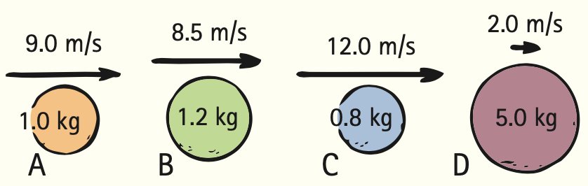
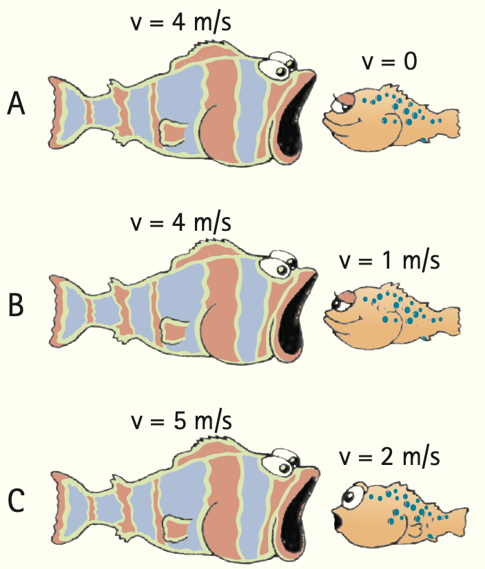

Chapter 6 Review
For instructor-assigned homework, go to www.masteringphysics.com
Summary Of Terms (Knowledge)
- Momentum
- The product of the mass of an object and its velocity.
- Impulse
- The product of the force acting on an object and the time during which it acts.
- Impulse-momentum relationship
- Impulse is equal to the change in the momentum of the object that the impulse acts upon. In symbolic notation, Ft = Δmv.
- Law of conservation of momentum
- In the absence of an external force, the momentum of a system remains unchanged. Hence, the momentum before an event involving only internal forces is equal to the momentum after the event: mv(before event) = mv(after event).
- Elastic collision
- A collision in which objects rebound without lasting deformation or the generation of heat.
- Inelastic collision
- A collision in which objects become distorted, generate heat, and possibly stick together.
Reading Check Questions (Comprehension)
6.1 Momentum
- Which has a greater momentum: a heavy truck at rest or a moving skateboard?
6.2 Impulse
- Distinguish between force and impulse.
- What are the two ways to increase impulse?
- For the same force, why does a long cannon impart more speed to a cannonball than a short cannon?
6.3 Impulse Changes Momentum
- How is the impulse–momentum relationship related to Newton’s second law?
- To impart the greatest momentum to an object, should you exert the largest force possible, extend that force for as long a time as possible, or both? Explain.
- When you are struck by a moving object, is it favorable that the object makes contact with you over a short time or over a long time? Explain.
- Why is a force that is applied for a short time more effective in karate?
- Why is it advantageous to roll with the punch in boxing?
6.4 Bouncing
- Which undergoes the greatest change in momentum: (a) a baseball that is caught, (b) a baseball that is thrown, or (c) a baseball that is caught and then thrown back, if all of the baseballs have the same speed just before being caught and just after being thrown?
- In the preceding question, which case requires the greatest impulse?
6.5 Conservation of Momentum
- Can you produce a net impulse on an automobile if you sit inside and push on the dashboard? Can the internal forces within a soccer ball produce an impulse on the soccer ball that will change its momentum?
- Is it correct to say that, if no net impulse is exerted on a system, then no change in the momentum of the system will occur?
- What does it mean to say that momentum (or any quantity) is conserved?
- When a cannonball is fired, momentum is conserved for the system cannon + cannonball. Would momentum be conserved for the system if momentum were not a vector quantity? Explain.
6.6 Collisions
- In which is momentum conserved: an elastic collision or an inelastic collision?
- Railroad car A rolls at a certain speed and makes a perfectly elastic collision with car B of the same mass. After the collision, car A is observed to be at rest. How does the speed of car B compare with the initial speed of car A?
- If the equally massive cars of the preceding question stick together after colliding inelastically, how does their speed after the collision compare with the initial speed of car A?
6.7 More Complicated Collisions
- Suppose a ball of putty moving horizontally with 1kg·m/s of momentum collides with and sticks to an identical ball of putty moving vertically with 1kg·m/s of momentum. What is the magnitude of their combined momentum?
- In the preceding question, what is the total momentum of the balls of putty before and after the collision?
Think And Do (Hands-On Application)
- When you get a bit ahead in your studies, cut classes some afternoon and visit your local pool or billiards parlor and bone up on momentum conservation. Note that no matter how complicated the collision of balls, the momentum along the line of action of the cue ball before impact is the same as the combined momentum of all the balls along this direction after impact and that the components of momenta perpendicular to this line of action cancel to zero after impact, the same value as before impact in this direction. You’ll see both the vector nature of momentum and its conservation more clearly when rotational skidding—“English”—is not imparted to the cue ball. When English is imparted by striking the cue ball off center, rotational momentum, which is also conserved, somewhat complicates the analysis. But, regardless of how the cue ball is struck, in the absence of external forces, both linear and rotational momenta are always conserved. Both pool and billiards offer a first-rate exhibition of momentum conservation in action.
Think and Do 21 image was omitted because no matching captured image was supplied.
Plug and Chug (Equation Familiarization)
Momentum = mv
- What is the momentum of an 8-kg bowling ball rolling at 2 m/s?
- What is the momentum of a 50-kg carton that slides at 4 m/s across an icy surface?
Impulse = Ft
- What impulse occurs when an average force of 10 N is exerted on a cart for 2.5 s?
- What impulse occurs when the same force of 10 N acts on the cart for twice the time?
Impulse = change in momentum: Ft = Δmv
- What is the impulse on an 8-kg ball rolling at 2 m/s when it bumps into a pillow and stops?
- How much impulse stops a 50-kg carton that is sliding at 4 m/s when it meets a rough surface?
Conservation of momentum: mvbefore = mvafter
- A 2-kg blob of putty moving at 3 m/s slams into a 2-kg blob of putty at rest. Show how the speed of the two stuck-together blobs of putty immediately after colliding is 1.5 m/s.
Think and Solve (Mathematical Application)
- Bowling Barry asks how much impulse is needed to stop a 10-kg bowling ball moving at 6 m/s. What is your answer?
- Joanne drives her car with a mass of 1000 kg at a speed of 20 m/s. Show that to bring her car to a halt in 10 s, road friction must exert a force of 2000 N on the car.
- A car carrying a 75-kg test dummy crashes into a wall at 25 m/s and is brought to rest in 0.1 s. Show that the average force exerted by the seat belt on the dummy is 18,750 N.
- Betty (mass 40 kg), standing on slippery ice, catches her leaping dog (mass 15 kg) moving horizontally at 3.0 m/s. Show that the speed of Betty and her dog after the catch is about 0.8 m/s.
- A 2-kg ball of putty moving to the right has a head-on inelastic collision with a 1-kg putty ball moving to the left. If the combined blob doesn’t move just after the collision, what can you conclude about the relative speeds of the balls before the collision?
- A railroad diesel engine weighs four times as much as a freight car. If the diesel engine coasts at 5 km/h into a freight car initially at rest, show that the speed of the coupled engine and car is 4 km/h.
- A 5-kg fish swimming at 1 m/s swallows an absentminded 1-kg fish swimming toward it at a speed that brings both fish to a halt immediately after lunch. Show that the speed of the approaching smaller fish before lunch must have been 5 m/s.
- Comic-strip Superhero meets an asteroid in outer space and hurls it at 800 m/s, as fast as a speeding bullet. The asteroid is a thousand times more massive than Superhero. In the strip, Superhero is seen at rest after the throw. Taking physics into account, what would be the speed of his recoil?
- Two automobiles, each of mass 1000 kg, are moving at the same speed, 20 m/s, when they collide and stick together. In what direction and at what speed does the wreckage move (a) if one car was driving north and one south and (b) if one car was driving north and one east (as shown in Figure 6.18)?
- An ostrich egg of mass m is tossed at a speed v into a sagging bed sheet and is brought to rest in a time t.
- Show that the force acting on the egg when it hits the sheet is mv/t.
- If the mass of the egg is 1 kg, its initial speed is 2 m/s, and the time to stop is 0.2 s, show that the average force on the egg is 10 N.
Think and Rank (Analysis)
- The balls shown have different masses and speeds. Rank the following from greatest to least:
- The momenta
- The impulses needed to stop the balls

- Jogging Jake runs along a train flatcar that moves at the velocities shown. In each case, Jake’s velocity is given relative to the car. Call direction to the right positive. Rank the following from greatest to least:
- The magnitudes of Jake’s momenta relative to the flatcar
- Jake’s momenta relative to a stationary observer on the ground

- Marshall pushes crates starting from rest across the floor of his classroom for 3 s with a net force as shown. For each crate, rank the following from greatest to least:
- Impulses delivered
- Changes in momentum
- Final speeds
- Momenta in 3 s

- A hungry fish is about to have lunch at the speeds shown. Assume the hungry fish has a mass five times the mass of the small fish. Immediately after lunch, rank from greatest to least the speeds of the formerly hungry fish.

Think and Explain (Synthesis)
- When a supertanker is brought to a stop, its engines are typically cut off about 25 km from port. Why is it so difficult to stop or turn a supertanker?
- In terms of impulse and momentum, why do padded dashboards make automobiles safer?
- In terms of impulse and momentum, why do air bags in cars reduce the risk of injury in accidents?
- Why do gymnasts use floor mats that are very thick?
- In terms of impulse and momentum, why do mountain climbers favor nylon ropes, which stretch considerably under tension?
- Why would it be a dangerous mistake for a bungee jumper to use a steel cable instead of an elastic cord?
- When you jump from a significant height, why is it advantageous to land with your knees slightly bent?
- A person can survive a feet-first impact at a speed of about 12 m/s (27 mi/h) on concrete, 15 m/s (34 mi/h) on soil, and 34 m/s (76 mi/h) on water. What is the reason for the different values for different surfaces?
- When you catch a fast-moving baseball with your bare hand, why is it important to extend your hand forward for the catch?
- Why would it be a poor idea to have the back of your hand up against the outfield wall when you catch a long fly ball?
- Many years ago, automobiles were manufactured to be as rigid as possible, whereas today’s autos are designed to crumple upon impact. Why?
- In terms of impulse and momentum, why is it important that helicopter blades deflect air downward?
- A lunar vehicle is tested on Earth at a speed of 10 km/h. When it travels as fast on the Moon, is its momentum more, less, or the same?
- You can’t throw a raw egg against a wall without breaking it. But Peter Hopkinson can throw an egg at the same speed into a sagging sheet without breakage. Explain, using concepts from this chapter.
- Why is it difficult for a firefighter to hold a hose that ejects large amounts of water at a high speed?
- Would you be safe in firing a gun that has a bullet 10 times as massive as the gun? Explain.
- Why are the impulses that colliding objects exert on each other equal and opposite?
- If a ball is projected upward from the ground with 10 kg·m/s of momentum, what is Earth’s momentum of recoil? Why don’t we feel this?
- When an apple falls from a tree and strikes the ground without bouncing, what becomes of its momentum?
- Why does a baseball catcher’s mitt have more padding than a conventional glove?
- Why do 8-ounce boxing gloves hit harder than 16-ounce gloves?
- You jump from a canoe to the nearby dock, expecting an easy landing. Instead, you land in the water. What is your explanation for this mishap?
- Explain how a swarm of flying insects can have a net momentum of zero.
- How can a fully dressed person at rest in the middle of a pond on perfectly frictionless ice get to shore?
- If you throw a ball horizontally while standing on roller skates, you roll backward with a momentum that matches that of the ball. Will you roll backward if you go through the motions of throwing the ball but don’t let go of it? Explain.
- The examples in the two preceding exercises can be explained in terms of momentum conservation and in terms of Newton’s third law. Assuming you’ve answered them in terms of momentum conservation, answer them also in terms of Newton’s third law (or vice versa, if you answered already in terms of Newton’s third law).
- Here are the familiar pair of carts connected by a spring. What are the relative speeds of the carts when the spring is released?

- If you place a box on an inclined plane, it gains momentum as it slides down. What is responsible for this change in momentum?
- Your friend says that the law of momentum conservation is violated when a ball rolls down a hill and gains momentum. What do you say?
- What is meant by a system, and how is it related to the conservation of momentum?
- If you toss a ball upward, is the momentum of the moving ball conserved? Is the momentum of the system consisting of ball + Earth conserved? Explain your answers.
- The momentum of an apple falling to the ground is not conserved because the external force of gravity acts on it. But momentum is conserved in a larger system. Explain.
- Drop a stone from the top of a high cliff. Identify the system in which the net momentum is zero as the stone falls.
- As you toss a ball upward, is there a change in the normal force on your feet? Is there a change when you catch the ball? (Think of doing this while standing on a bathroom scale.)
- When you are traveling in your car at highway speed, the momentum of a bug is suddenly changed as it splatters onto your windshield. Compared with the change in the momentum of the bug, by how much does the momentum of your car change?
- If a tennis ball and a bowling ball collide in midair, does each undergo the same amount of momentum change? Defend your answer.
- If a Mack truck and a MiniCooper have a head-on collision, which vehicle experiences the greater force of impact? The greater impulse? The greater change in momentum? The greater deceleration?
- Is a head-on collision between two cars more damaging to the occupants if the cars stick together or if the cars rebound upon impact?
- A 0.5-kg cart on an air track moves 1.0 m/s to the right, heading toward a 0.8-kg cart moving to the left at 1.2 m/s. What is the direction of the two-cart system’s momentum?
- Two identical carts on an air table move at right angles to each other and have a completely inelastic collision. How does their combined momentum compare with the initial momentum of each cart?
- In a movie, the hero jumps straight down from a bridge onto a small boat that continues to move with no change in velocity. What physics is being violated here?
- To throw a ball, do you exert an impulse on it? Do you exert an impulse to catch the ball at the same speed? About how much impulse do you exert, in comparison, if you catch it and immediately throw it back again? (Imagine yourself on a skateboard.)
- In reference to Figure 6.9, how will the impulse at impact differ if Cassy’s hand bounces back upon striking the bricks? In any case, how does the force exerted on the bricks compare to the force exerted on her hand?
Think and Discuss (Evaluation)
- It is generally much more difficult to stop a heavy truck than a skateboard when they move at the same speed. Discuss why the moving skateboard could require more stopping force. (Consider relative times.)
- A boxer can punch a heavy bag for more than an hour without tiring but tires quickly when boxing with an opponent for a few minutes. Why? (Hint: When the boxer’s fist is aimed at the bag, what supplies the impulse to stop the punches? When the boxer’s fist is aimed at the opponent, what or who supplies the impulse to stop the punches that don’t connect?)
- Railroad cars are loosely coupled so that there is a noticeable time delay from the time the first car is moved until the last cars are moved from rest by the locomotive. Discuss the advisability of this loose coupling and slack between cars from the point of view of impulse and momentum.

- If only an external force can change the velocity of a body, how can the internal force of the brakes bring a moving car to rest?
- In Chapter 5, rocket propulsion was explained in terms of Newton’s third law; that is, the force that propels a rocket is from the exhaust gases pushing against the rocket, the reaction to the force the rocket exerts on the exhaust gases. Discuss and explain rocket propulsion in terms of momentum conservation.
- Discuss how the conservation of momentum is a consequence of Newton’s third law.
- A car hurtles off a cliff and crashes on the canyon floor below. Identify the system in which the net momentum is zero during the crash.
- Bronco dives from a hovering helicopter and finds his momentum increasing. Does this violate the conservation of momentum? Discuss.
- An ice sail craft is stalled on a frozen lake on a windless day. The skipper sets up a fan as shown. If all the wind bounces backward from the sail, will the craft be set in motion? If so, in what direction?

- Discuss whether or not your answer to the preceding exercise would be different if the air is brought to a halt by the sail without bouncing.
- Discuss the advisability of simply removing the sail in the preceding exercises.
- Which exerts the greater impulse on a steel plate: machine gun bullets bouncing from the plate or the same bullets squashing and sticking to the plate?
- Freddy Frog drops vertically from a tree onto a horizontally moving skateboard. The skateboard slows. Discuss two reasons for this: one in terms of a horizontal friction force between Freddy’s feet and the skateboard, and one in terms of momentum conservation.

- You have a friend who says that after a golf ball collides with a bowling ball at rest, although the speed gained by the bowling ball is very small, its momentum exceeds the initial momentum of the golf ball. Your friend further asserts this is related to the “negative” momentum of the golf ball after the collision. Another friend says this is hogwash—that momentum conservation would be violated. Which friend do you agree with?
- Suppose that there are three astronauts outside a spaceship and they decide to play catch. All the astronauts weigh the same on Earth and are equally strong. The first astronaut throws the second one toward the third one and the game begins. Describe the motion of the astronauts as the game proceeds. How long will the game last?

- Light possesses momentum. This can be demonstrated with a radiometer, shown in the sketch. Metal vanes painted black on one side and white on the other are free to rotate around the point of a needle mounted in a vacuum. When light is incident on the black surface, it is absorbed; when light is incident on the white surface, it is reflected. Upon which surface is the impulse of incident light greater, and which way will the vanes rotate? (They rotate in the opposite direction in the more common radiometers in which air is present in the glass chamber; your instructor may tell you why.)
Think and Discuss 101 image was omitted because no matching captured image was supplied.
- A deuteron is a nuclear particle made up of one proton and one neutron. Suppose that a deuteron is accelerated up to a certain speed in a cyclotron and directed into an observation chamber, where it collides with and sticks to a target particle that is initially at rest and then the combination is observed to move at half the speed of the incident deuteron. Discuss why the observers state that the target particle is itself a deuteron.
- A billiard ball will stop short when it collides head-on with a ball at rest. The ball cannot stop short, however, if the collision is not exactly head-on—that is, if the second ball moves at an angle to the path of the first. Do you know why? (Hint: Consider the momenta before and after the collision along the initial direction of the first ball and also in a direction perpendicular to this initial direction.)
- When a stationary uranium nucleus undergoes fission, it breaks into two unequal chunks that fly apart. What can you conclude about the momenta of the chunks? Discuss what you conclude about the relative speeds of the chunks.